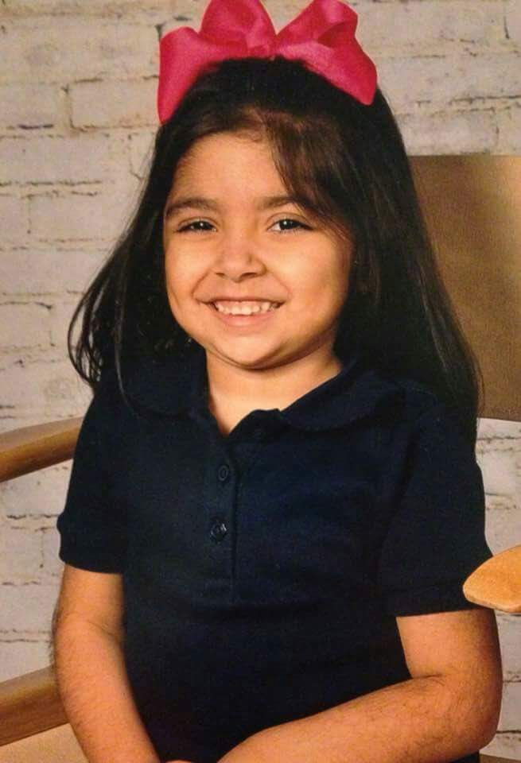

Carizma is my 2nd youngest sister. I love her so much she is so crazy! She is in one of those stages where she repeats everything she hears so we have to be careful about what we say around her. She is in love with Frozen and My Little Pony. Instead of saying "I dont want to" she always says "I cant want to". Her favorite color is purple just like mine. She always says I am her favorite sister but I only think she is saying that because I buy her cookies. I love Carizma with all my heart and I would die for my little nina if I had to."
